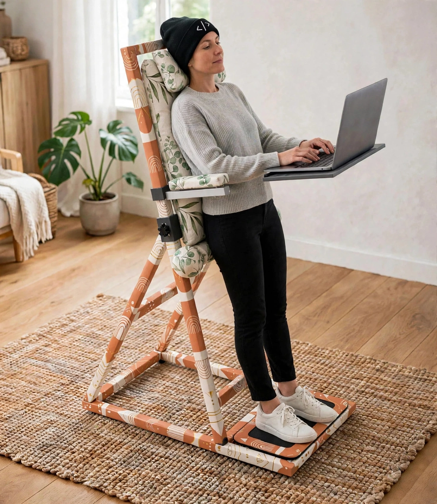
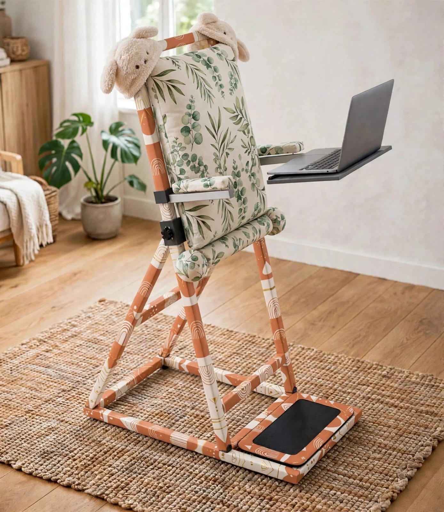

Work standing up, without the tired legs.
Leaning Workstation is a lean chair for laptop work: a tilted backrest, a pelvic roller, armrests and a tray. Explore the full 3D model with dimensions and see how it goes together.
Explore the 3D model How it works
AI-generated concept imageExplore the 3D model
Turn it around, zoom in and look at every joint. The model shows the main dimensions directly on the design.
Between sitting and standing
Sitting all day is tiring and standing all day is tiring too. You stand on a foot platform, lean back on a tilted backrest, and rest your pelvis on a roller. Your forearms rest on pads with the laptop in front of you, so the frame carries much of your weight instead of your legs and lower back.
15° lean
The whole frame leans back 15° from vertical. The angle is a setting in the model.
Full-height backrest
A padded board 1,020 mm tall supports you from lower back to head.
Pelvic roller
A padded roller holds your hips. It is clamped to the uprights and can be set at different heights.
Armrests
Two forearm pads on rails, also clamped to the uprights, so the height can be changed.
Tilted laptop tray
The tray is tilted 15° to match the lean. It pivots on one screw, so you can swing it aside to get in and out.
Bolted frame
A base, a front upright and a rear leg, joined by bolted gusset plates.
The idea at a glance
An illustration of the design idea.

AI-generated concept imageKey dimensions
The main dimensions of the model. All values are in millimetres (mm) unless marked in degrees. The heights are a starting point for an average adult, so adjust them to fit your body.
| Dimension | Value | What it is |
|---|---|---|
lean_angle | 15° | Lean from vertical |
apex_height | 1,000 mm | Height of the top joint where the upright meets the rear leg |
pelvic_height | 710 mm | Height of the pelvic roller from the floor |
armrest_height | 1,120 mm | Height of the forearm rests |
laptop_forward_clearance | 115 mm | Gap between the armrest pads and the tray |
tray_tilt | 15° | Tilt of the laptop tray |
tray_width × tray_depth | 660 × 300 mm | Size of the laptop tray |
backboard_height × width | 1,020 × 500 mm | Size of the backrest board |
base_length × base_width | 1,140 × 660 mm | Footprint of the base |
total_spine_len | 2,000 mm | Length of the front uprights |
Materials
The model is designed in mild steel square tube. Sizes are in mm.
Steel specification
- Main tube40 × 40 mm square tube, 2.5 mm wall
- Armrest rails30 × 30 mm square tube, 2 mm wall
- Gusset plates5 mm mild steel
- Clamp plates4.5 mm mild steel, with 1.5 mm rubber liner
- Frame jointsM8 bolts through plates
- ToolsDrill, metal saw, files
Other parts
- Backrest12 mm plywood board with 50 mm foam
- Pelvic roller58 mm diameter, about 612 mm long
- Forearm pads240 × 75 × 30 mm
- Laptop tray660 × 300 × 14 mm
- Foot platformabout 540 × 335 mm
| Part | Qty | Size (mm) |
|---|---|---|
| 40 × 40 tube, base side rails | 2 | 1,140 |
| 40 × 40 tube, front uprights | 2 | about 2,000 |
| 40 × 40 tube, rear legs | 2 | about 1,060, trim at the joints |
| 40 × 40 tube, crossbars | 9 | 580 (4 base, 4 upright, 1 rear) |
| 30 × 30 tube, armrest rails | 2 | about 680 |
| 5 mm gusset plates | 12 | shapes are in the model |
| M8 bolts, nuts, washers | about 36 for the frame | plus clamp bolts |
| Friction clamps | 4 | 2 plates each, bolts and a rubber liner |
Counts are approximate and taken from the model. Check them against the 3D view before you cut anything. An aluminum build with the same layout is possible, but it is not modelled here.